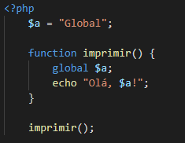
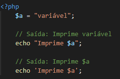
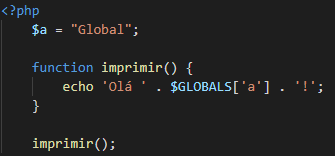
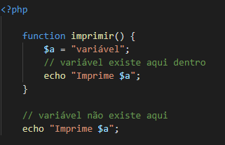

Global – variável ficará disponível em qualquer parte do script:
No exemplo acima, declaramos a variável $a. Dentro da função imprimir, utilizamos a instrução global para referenciar o valor global da variável $a.
NOTA: ao envolver uma variável com aspas duplas, seu valor será interpretado.
Outra forma de recuperar o valor de $a seria utilizando uma variável pré definida chamada $GLOBALS, já que sua função é referenciar todas as variáveis definidas em escopo global:
Static – variável ficará disponível apenas no escopo local da função:
